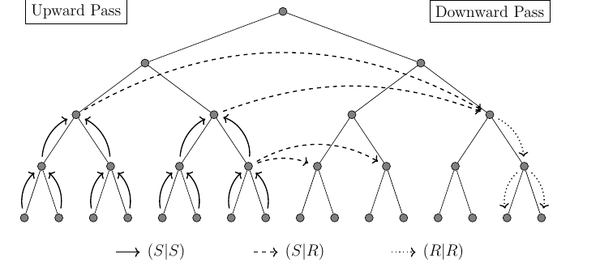

Fast Multipole Acceleration#
FMM accelerates Green’s function interactions of the form
Without compression this is dense interaction work: storage is roughly \(O(MN)\) and a direct matrix vector product is also \(O(MN)\).
The fast multipole method avoids treating all interactions equally. Nearby interactions are kept accurate and direct while far interactions are approximated by expansions around cluster centers.
Where FMM Enters BEM#
For a scalar single layer operator, a Galerkin BEM matrix entry is
After quadrature,
The inner sum has exactly the source to target form accelerated by FMM.
NGSolve combines it with a sparse correction:
where \(A_{\mathrm{corr}}\) corrects interactions between touching boundary elements.
Near Field and Far Field#
For a target cluster, source interactions are split into two classes:
near field: source and target clusters are close - these terms are evaluated directly or corrected by special quadrature,
far field: clusters are well separated - their combined effect is represented by multipole and local expansions.
In the implementation this has two near field parts:
Sparse BEM correction: touching elements use accurate Sauter Schwab rules [SS09] based on Duffy transformations. Their ordinary quadrature contribution is replaced by the accurate local matrix.
Direct FMM fallback: boxes that are not well separated are evaluated directly. SIMD packs several leaf sources and evaluates their kernel values together.
Regular and Singular Expansions#
Following [GD04], the Helmholtz basis functions in spherical coordinates:
Here \(r=|x-c|\), \(Y_n^m\) are spherical harmonics, \(j_n\) are spherical Bessel functions, and \(h_n^{(1)} = j_n + i y_n\) are outgoing spherical Hankel functions.
Regular expansion:
finite at the expansion center,
used for local target expansions.
Singular expansion:
singular at the expansion center,
outgoing for Helmholtz; satisfies the Sommerfeld radiation condition,
used to represent the field generated by a source cluster.
Bessel and Hankel Stability#
The radial basis functions satisfy the recurrence
For small \(|z|\) and large \(n\), the radial functions can have very different magnitudes and direct recurrence may overflow or underflow. NGSolve uses a stable backward recurrence, treats small arguments separately, and rescales large intermediate values.
Multilevel FMM#
Source and target points are grouped in an adaptive tree. The computation moves upward, across well separated boxes, and downward to the targets.

A translation in an arbitrary direction is split into three simpler steps:
rotate the coordinate system so the translation direction becomes the \(z\) axis,
translate along the \(z\) axis,
rotate back.
As a matrix product, this can be written in the form
Here \(A(\ell)\) translates along the \(z\) axis, \(Y\) changes the polar direction, and \(D(\phi)\) is a cheap azimuthal phase factor. The \(z\) axis translation preserves \(m\) and therefore has block structure. Applied directly, a translation couples all \(p^2\) input coefficients with all \(p^2\) output coefficients and costs \(O(p^4)\). Splitting it into rotations and a \(z\) axis translation reduces the cost to \(O(p^3)\).
For one source and target box pair, a normal translation is
Here \(p\) is the expansion order, using degrees \(n=0,\dots,p-1\), so \(a \in \mathbb{C}^{p^2}\) contains \(p^2\) coefficients.
Within each translation type, the implementation groups \(q\) translations that share the same costly operation \(C(\ell,\theta)\). The index \(j=1,\dots,q\) identifies one translation in the group. The rotation and shift data are constructed once and applied to all \(q\) multipoles; the remaining cheap direction factors are applied separately. The multipoles are packed as columns:
Here \(\tilde a_j=D(\phi_j)a_j\). Each column is one multipole and each row one coefficient \((n,m)\). The same rotation and shift data are reused while all columns are processed together. Each output column then receives \(D(-\phi_j)\) and is added to its target.
The three translation types are grouped as follows:
\(S \to S\): child singular expansions move to parent boxes; equal \((\ell,\theta)\) are batched.
\(S \to R\): well separated singular expansions become regular target expansions; equal \((\ell,\theta)\) are batched.
\(R \to R\): regular expansions move from parents to children. On each level \(\ell\) is fixed, so batches are grouped by \(\theta\).
The approximation is unchanged; batching improves reuse by processing several coefficient vectors together.
FMM Controls#
FMM can be enabled or disabled per boundary integral operator.
A_fmm = LaplaceSL(u * ds, use_fmm=True) * v * ds
A_direct = LaplaceSL(u * ds, use_fmm=False) * v * ds
FMM parameters are exposed as keyword arguments:
A = HelmholtzSL(
u * ds,
kappa,
fmm_maxdirect=100,
fmm_minorder=20,
fmm_order_factor=2.0,
fmm_separation=2.0,
fmm_eval_separation=3.0,
) * v * ds
GetFMMInfo() returns tree and operator data for the generated FMM matrix action.
info = A_fmm.GetFMMInfo()
info["kernel_name"]
info["source_size"], info["target_size"]
info["nearfield_fraction"]
info["multipole_memory_mb"]
info["source"]["depth"], info["target"]["depth"]
info["source"]["order_min"], info["source"]["order_max"]